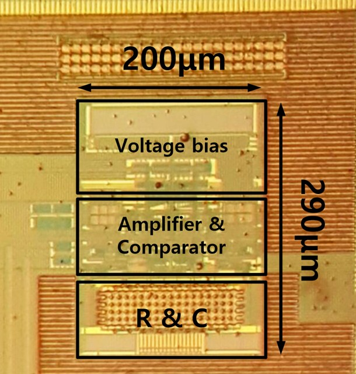
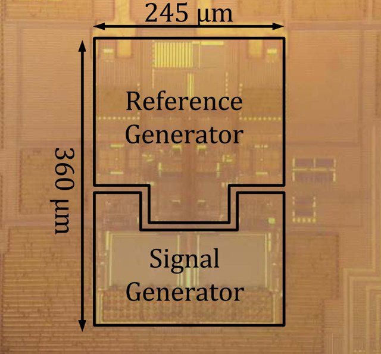
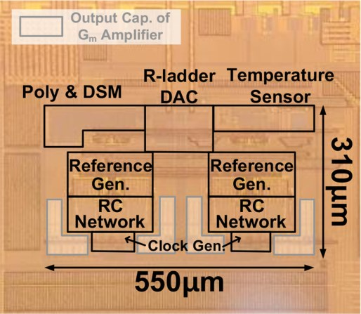
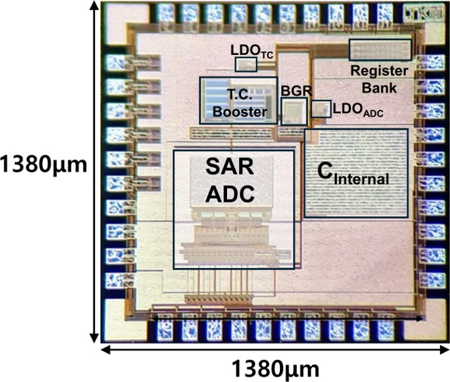
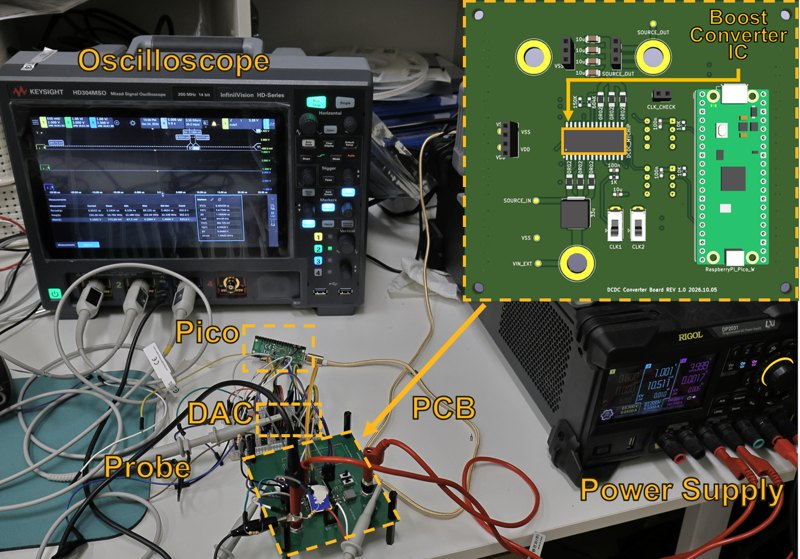

Research
저전력 아날로그 · 혼성신호 회로를 설계하고, 칩으로 제작해 측정합니다. 아래 칩 사진은 논문으로 발표한 것입니다. 발진기 · 타이머 | ADC · PLL | 센서 인터페이스 | 학부생 칩 설계 | 그 밖에 진행 중인 연구
발진기 · 타이머 Low-Power Oscillator & Timer
칩이 동작하려면 기준이 되는 클럭이 필요합니다. 보통은 칩 밖에 크리스털을 달지만, 칩 안의 저항(R)과 커패시터(C)만으로 클럭을 만들면 크기와 전력을 줄일 수 있습니다. 대신 잡음이 크고 온도에 따라 주파수가 변하는 문제가 있어서, 이를 줄이는 회로를 연구합니다.
- Design a voltage swing controlled RC oscillator by frequency error compensation loop
- Noise analysis of the RC oscillator with a frequency locked loop
- Compensation for a frequency variation over temperature change
- A 9.6-nW wake-up timer with RC-referenced subharmonic locking


ISSCC 2017 · TCAS-I 2019


TVLSI 2022


TCAS-II 2025

TVLSI 2025
ADC · PLL Data Converter & Clock Generation
ADC 는 아날로그 전압을 디지털 숫자로 바꾸는 회로이고, PLL 은 기준 클럭에서 필요한 주파수의 클럭을 만들어 내는 회로입니다. 둘 다 아날로그 회로와 디지털 회로가 함께 들어가는 대표적인 혼성신호 회로입니다.
- SAR ADC : 커패시터 DAC 의 배열 구조를 바꿔 기생 커패시턴스와 부정합의 영향을 줄임 (보정 없이 측정)
- PLL : 10 MHz 에서 3.2 GHz 까지 동작하는 self-biased adaptive bandwidth PLL
- CDR : 디지털 합성으로 만든 quarter-rate CDR
- 온도 센서 : hybrid BJT–MOS temperature sensor (공동 연구)

TVLSI 2026

MWSCAS 2024


JSSC 2026
센서 인터페이스 Low-Power Sensor Interface System
센서에서 나오는 아주 작은 전류를 읽고, 디지털 값으로 바꿔서 내보내는 칩입니다. 전원 회로, 발진기, ADC, 통신 회로가 한 칩에 모두 들어가기 때문에 여러 회로를 함께 설계해야 합니다.
A smart contact lens IC for glucose monitoring in 0.18μm CMOS
- Design a power management block (rectifier, regulators, bandgap voltage reference, etc.), timer, digital SD-based current ADC, RC oscillator, analog-frontend, and wireless communication block
- Implement a wireless communication system using a 433MHz on-off keying modulation
- Implement a wireless power transfer system using the resonance of external coils
A low-power sensor interface IC in 0.18μm CMOS
- Design a power management block (regulators, bandgap voltage reference, etc.), synthesized digital control unit, digital-based current ADC, analog-front ends and an I2C communication block
- Implement a wireless gas sensing system using a designed IC and a commercial BLE chip and gas sensors.
- The IC chip is used by a startup company (Nodetalks) to make a gas sensor product


VLSI 2019 · JSSC


(사진 : 노드톡스)
학부생 칩 설계 Undergraduate Chip Design (MyChip)
학부 교육도 칩 제작과 연계해서 합니다. 겨울방학에 4주 동안 회로 설계 교육을 하고, 교육을 마친 학생들이 내 칩(MyChip) 제작 서비스로 칩을 만들어 직접 측정합니다.
- 교육 순서 : 설계 툴 사용법 → 2단 증폭기 → 폴디드 캐스코드 증폭기
- 내 칩 제작 : 2024년 발진기, 2025년 ADC, 2026년 승압 DC-DC 컨버터
- 2026년에는 학부 4학년 학생 3명이 승압 DC-DC 컨버터를 설계하고 측정했습니다 (1 V 입력에서 약 4 V 출력 확인). 이 결과로 제2회 내 칩 경진대회 본선(14팀)에 올랐습니다.



그 밖에 진행 중인 연구
- 아날로그 CIM (Computing-in-Memory)
- RISC-V 프로세서 · AI 가속기
- 전원 회로 : LDO, DC-DC 컨버터
- NV 양자 센싱 : 다이아몬드 NV 센터를 이용한 양자 센서를 CMOS 칩으로 구동하고 읽어 내는 연구 (준비 중, 초기 단계)
학생별 주제는 People 페이지에 있습니다.
[1] D. H. Keum et al., "Wireless smart contact lens for diabetic diagnosis and therapy," Science Advances, 2020. [Link] · 그 밖의 논문은 Publication 페이지에 있습니다.